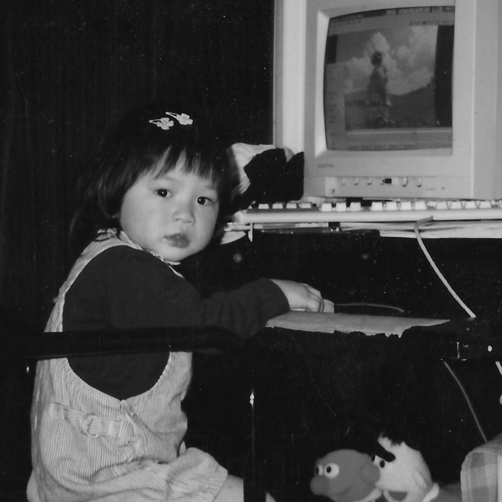

Shelley Tsui graduated from the University of Washington with a Bachelor of Design in visual communication and a minor in informatics. She has learned to acknowledge and embrace the design process as fluid, never fixed.
Currently, she serves as the Product and Design Lead at Curious and Buildfire, helping design the future of app creation.
This site was coded from scratch using basic HTML, CSS, and a little bit of JavaScript. The typefaces used are Instrument Serif and Instrument Sans.
Product and Design Lead
Buildfire
2024 - present
Product and Design Lead
Curious
2024 - present
Experience Designer
September Works
2021 - 2024
